library(curatedOvarianData)
data(GSE32063_eset)
table(pData(GSE32063_eset)[,"debulking"])
optimal suboptimal
19 21 Biomarker validation and testing
The lecture Biomarkers in Cancer Research by Nabihah Tayob is highly recommended, particularly if you are encountering concepts like positive predictive value or ROC curves for the first time. This lecture also give a bit more context of biomarkers in cancer compared to what we have been able to cover in Lecture 2.
We first focus on the gene ZNF487 contained within the GSE32063_eset dataset. ZNF487 stands for “Zinc Finger Protein 487”. The exprs function allows us to pull out expression-level data, while pData retrieves the phenotype data, which are the clinical characteristics and outcomes of patients. In the next chunk of code, we will consider the debulking variable as our response variable, and the expression data for the ZNF487 gene as our predictor variable, or biomarker.
The term debulking captures whether the patient’s surgery was successful in removing the tumor mass (optimal debulking) in contrast to the case where additional tumor cells where thought to be present based on the surgeon’s inspection, but could not be removed (suboptimal debulking).
A discussion of the clinical relevance of this question is in the introduction of @Riester2014. A useful debulking marker could spare an unnecessary surgery to patients who will not benefit. However, a high degree of reliability would be needed for the decision to forego surgery, as the benefit of a hypotetical successful surgery could be substantial.
optimal suboptimal
19 21 We will further define the debulking variable to be \(1\) if optimal, and \(0\) if suboptimal. For ZNF487 this results in higher levels of gene expression being generally associated with optimal debulking.
A most basic way to begin visualization is a pair of dot-plots depicting class-conditional distributions of expression. It allows one to visually gauge the overall separation between expression levels corresponding to optimal versus suboptimal debulking status. The plot appears to indicate that larger and more positive expression values of the biomarker are associated with a debulking status of \(1\), or optimal.
GeneName = "ZNF487"
XX = exprs(GSE32063_eset)[GeneName,]
YY = pData(GSE32063_eset)[,"debulking"] == "optimal"
plot(XX,YY,xlab=c("Log Expression of",GeneName),
ylab="Debulking Status",cex=2)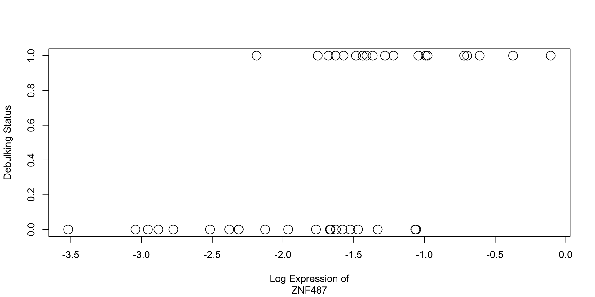
Before you go any further pause to think about what you learned from the dot plot about the potential for ZNF487 to serve as a useful biomarker.
Think about the question in the abstract and in the context of the surgery decision described above.
ffx = density(XX[YY==FALSE],from=-4,to=0)$x
ff0 = density(XX[YY==FALSE],from=-4,to=0)$y
ff1 = density(XX[YY==TRUE],from=-4,to=0)$y
plot(ffx,ff0,xlab=c("Log Expression",GeneName),
ylab="Density",main = "",
ylim=c(0,1), col = "blue",type="l",lwd=2)
lines(ffx,ff1, col = "green",lwd=2)
rug(XX[YY==FALSE],ticksize = .05,lwd=2, col = "blue")
rug(XX[YY==TRUE],ticksize = .05,lwd=2, col = "green")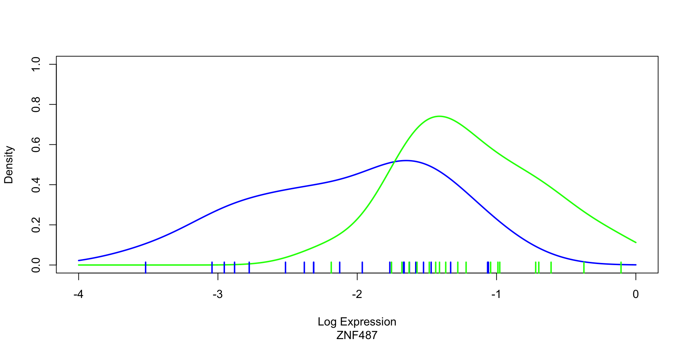
We can also visualize the data via the empirical density curves of expression for different group by debulking status. The green curve is associated with optimal debulking, and the blue with suboptimal debulking. The density plots above are essentially capturing the same variation as the dot-plot. The marks at the bottom correspond to the dotplots points. The density plot provides a different view of the overall variation, particularly in the area of overlap. Generally, multiple visualizations of the same data may assist in better understanding properties of the data.
With small sample sizes this visualization will be very sensitive to the tuning parameters of the density estimate (try the “adjust” input which controls the smoothness of the curve). That said if you have a decent guess about the smoothness of the density, you can use the estimated curves to get various types of useful probabilistic predictions and estimates. Some are coming next.
The previous sets of plots start to indicate that the ZNF487 biomarker may be informative for the purpose of predicting debulking status. Clinically, a biomarker may be used to classify a new patient after having measured her specific level. We are then interested in understanding the or ppv associated with the measured expression, that is the conditional probability of the label given the observed biomarker level. Bayes’ rule allows us to calculate this conditional (or personalized) probability if we know the frequency of optimally debulkable tumors in a population of reference (prevalence) of which the patient in question is a random representative.
The expression measurements we used here are obtained from a fresh frozen tumor sample taken at the time of surgery. If we discovered a usefl biomarker, we would also try to measure it differently, for example based on a less invasive procedure such as a biopsy (wich uses a needle to remove a small section of the tumor). To think about the utility of a marker, imagine it is available before the surgery is performed.
prev = .1
ppv = prev * ff1 / ( prev * ff1 + (1-prev) * ff0)
plot(ffx,ppv,ylim=c(0,1),
xlab=c("Log Expression",GeneName),
ylab="Probability of optimal debulking",type = "l",lwd=2)
prev = .2
ppv2 = prev * ff1 / ( prev * ff1 + (1-prev) * ff0) # BAYES RULE
lines(ffx,ppv2,lty="dotted")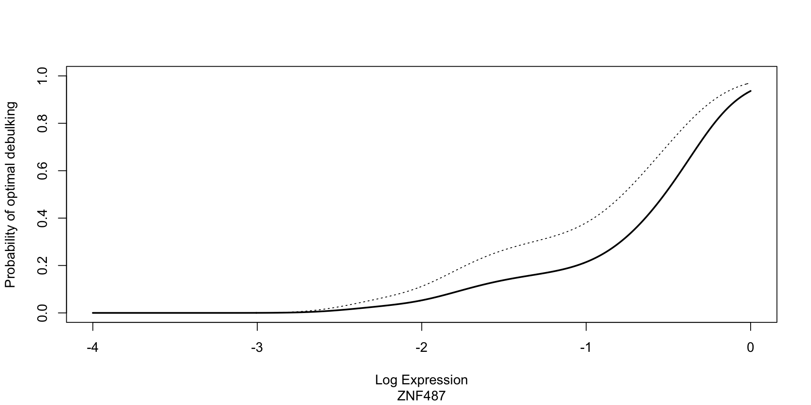
The code above computes ppv and graphs it with prevalence set at prev = .1 and \(.2\). The dotted line corresponds to a prevalence of \(.2\).
Which shape do you wish a ppv curve to have for a predictive biomarker to be useful?
The Yoshihara study B includes about the same number of optimal and suboptimal cases. Why would we be interested in evaluating PPV at prevalences of 10 and 20 percent?
(related to 2.) Yoshihara et al describe the combined collection of studies A and B by saying “patients who were diagnosed with advanced stage high-grade serous ovarian cancer between July 1997 and June 2010 were included in this study”. Below is breakdown of optimal and suboptimal for study A. Comment.
The ppv depends on the empirical densities of the biomarkers only through their ratio. This ratio corresponds to the likelihood ratio when using Bayes’ rule. Higher values of the ZNF487 biomarker results in a higher ratio which in turn indicates a higher probability of optimal debulking. The next plot is the empirical log-likelihood ratio of the optimal vs. suboptimal debulking outcomes, as a function of the gene expression level.
For this discussion, a classifier is a hard and fast decision rule to separate patients in two groups for the purpose of treatment decisions. The simplest classifier we can construct using this biomarker is to establish a threshold such that patients with expression above the threshold are classified as likely optimal. In keeping with medical terminology we refer to the individuals with the more severe disease, in this case the suboptimally debulked patients, as “positive”. If we were to decide to set threshold at \(-1\), the reported confusion matrix associated with such a decision rule would be given by the table below.
True Positive
Biomarker Positive FALSE TRUE
FALSE 7 0
TRUE 12 21We observe that all true suboptimal debulking cases were correctly classified. We say that the true positive rate (or sensitivity) is \(1\). On the other hand among the true optimal debulking cases, \(7\) out of \(19\) were correctly predicted. The true negative rate is then \(7/19\) corresponding to a specificity of \(1 - 7/19\).
In which scenarios is is this a good cutoff?
There are many valid alternatives for investigating and visualizing the properties of a threshold-based classifier. These include
Receiver Operating Characteristic (ROC) curves, which plots sensitivity against one minus specificity
Precision versus Recall plots, which plots positive predictive value against sensitivity
Total Operating Characteristic. @pontius2014
Detection Error Tradeoff @Martin:1997ve.
@saito2015 compares ROC and PR in some detail.
We will now motivate and introduce the concept of the ROC Curve. It is useful to begin with cumulative distributions.
plot(ecdf(XX[YY==FALSE]),main="",ylab="Empirical CDFs",col="blue",xlim=range(XX))
lines(ecdf(XX[YY==TRUE]),col="green")
abline(v=-1, col = "red")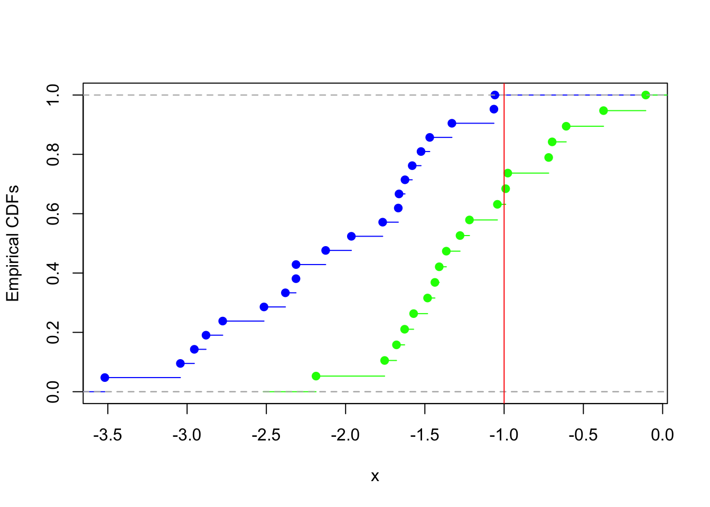
In the figure above, the blue curve represents the empirical CDFs of the suboptimal debulking biomarker values, and the green curve the empirical CDFs of the optimal. One can then imagine setting many thresholds across the biomarker expression values (x-axis) and pairing the blue/green CDF values obtained. For example the earlier threshold of \(-1\) is also shown. It crosses the blue line at the true positive rate, and the green line at the false negative rate, or one minus the true negative rate.
Type 'citation("pROC")' for a citation.
Attaching package: 'pROC'The following object is masked from 'package:BiocGenerics':
varThe following objects are masked from 'package:stats':
cov, smooth, varSetting levels: control = FALSE, case = TRUESetting direction: controls < cases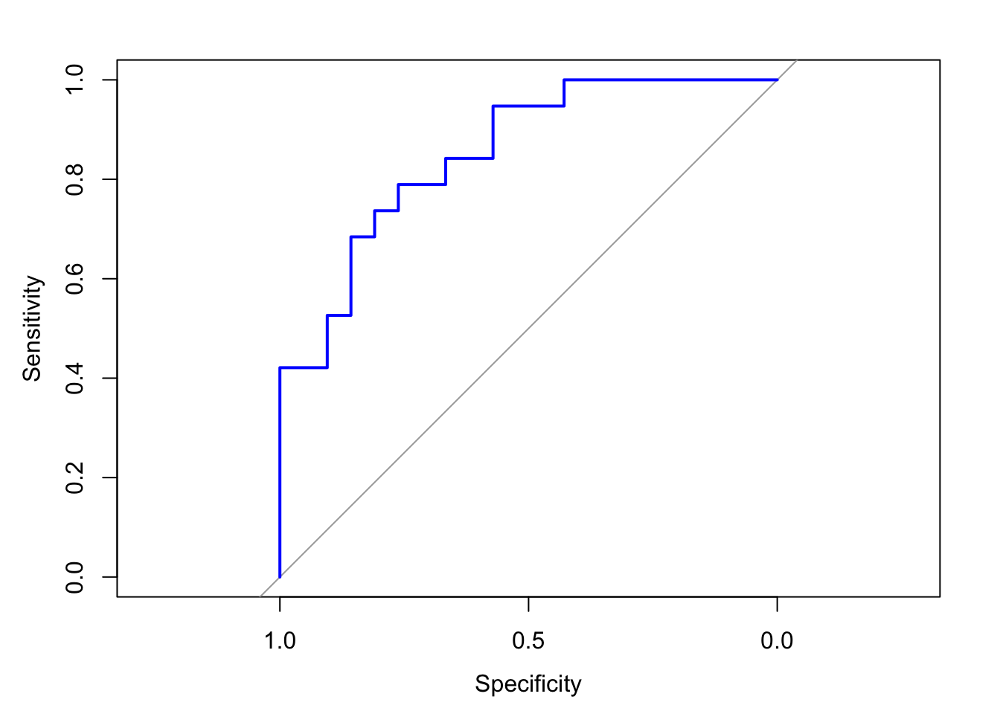
The empirical ROC curve can then be computed by comparing the pairings from many such thresholds. The ROC curve is a 2-D plot with the true positive rate (sensitivity) on the y-axis and the false positive rate (one minus specificity) on the x-axis. It yields the tradeoffs between these two rates for a given cutoff. In other words, each point on the curve represents the true and false positive rates associated with a threshold. The 45 degree line (colored red) of the ROC curve represents the curve one would obtain if the two cumulative distributions were the same. The ROC curve can be used to informally assess the relative merits of alternative cutoffs, as well as the overall separation of the curves. Directly leading from the ROC Curve is the AUC (Area under the Curve). This is a widely used metric for comparing different classification methods. The AUC is represented visually above as the area under the black curve (including the area to the right of the red line).
The general rule of thumb is that given a classification method and two biomarkers, the biomarker with the higher AUC under the same method tends to be a better classifier.
What are some limitations of this metric?
We can also build a smooth version of the ROC curve, for example by calculating estimates of the class-conditional cumulative distributions from the smooth density plot we derived earlier.
FF0 = cumsum(ff0); FF0 = FF0 / max(FF0)
FF1 = cumsum(ff1); FF1 = FF1 / max(FF1)
plot(1-FF0,1-FF1,
xlab=c("False Positive Rate",GeneName),
ylab="True Positive Rate",
type = "l",lwd=2)
abline(0,1)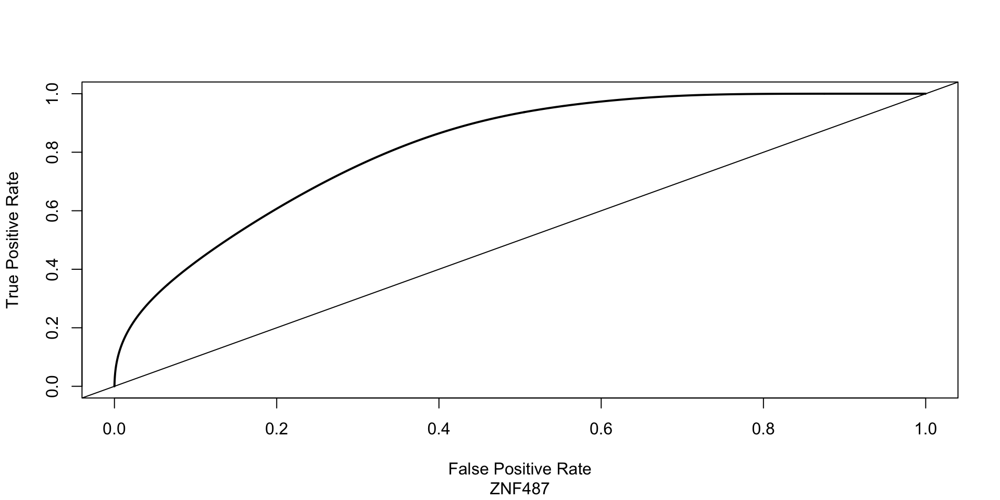
The AUC nonparametrically compares the two distributions, and it turns out that testing for whether the ROC significantly deviates from the diagonal line can be done equivalently by the non-parametric rank-sum test, which is implemented below.
Wilcoxon rank sum exact test
data: XX[YY == TRUE] and XX[YY == FALSE]
W = 340, p-value = 6.261e-05
alternative hypothesis: true location shift is not equal to 0The null hypothesis is that the biomarker level of a randomly selected sample from the set of optimal cases will have the same chance of being greater than or less than a randomly selected sample from the set of suboptimal cases. The p-value above strongly indicates potential departure from the null.
When searching for biomarkers, a statistically significant difference from the diagonal may or may not be associated with a clinical useful biomarker. For example, let us examine the dot-plots of the ANKRD66 gene.
GeneName = "ANKRD66"
XX_ANKRD66 = exprs(GSE32063_eset)[GeneName,]
YY_ANKRD66 = pData(GSE32063_eset)[,"debulking"] == "optimal"
plot(XX_ANKRD66,YY_ANKRD66,
xlab=c("Log Expression of",GeneName),cex=2)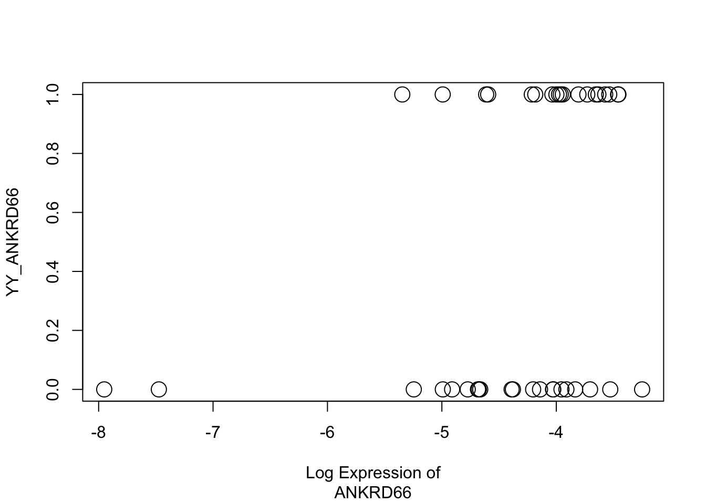
The dot-plot gives no visual indication that there is good separation of biomarker expression across the two debulking outcomes. However, the p-value from the rank sum test below for these two outcomes is \(0.05042\), which, although not technically significant at the traditional \(.05\) threshold, provides at least some indication of a departure from equal distributions. This departure is primarily attributable to the a) two outliers in the suboptimal class and b) an accumulation of points slightly above -4 in the optimal class which has a strong effect on the ranks but happens within a range unlikely to translate into biologically meaningful activity. Two points emerge: differences in ranks do not necessarily translate in clinically useful biomarkers. Lack of overlap in the tails can quickly produce significant Wilcoxon tests.
Wilcoxon rank sum exact test
data: XX_ANKRD66[YY_ANKRD66 == TRUE] and XX_ANKRD66[YY_ANKRD66 == FALSE]
W = 272, p-value = 0.05042
alternative hypothesis: true location shift is not equal to 0An even more important disconnect between statistical significance and clinical utility occurs in larger studies, where biomarker may achieve a rejection of the null as a result of biologically weak differences between the two class conditional distributions.
Finally, we discuss on how the ROC relates to the CDF and the labeling of positive and negative cases. Suppose that large or high values of the biomarker are associated with positive cases. In such a case, the ROC curve is created by plotting the following function:
\[ ROC_p = \{1-F_0(c), 1-F_1(c)\} \qquad \text{for} \ -\infty < c < \infty \]
where \(F_1(x), F_0(x)\) are the CDFs of the positive and negative cases, respectively. The ROC plot in such a case is creating by plotting the above pairing across many thresholds \(c\). If instead it is the case that large or high values of the biomarker are associated with negative cases, then the ROC curve is created by plotting instead:
\[ ROC_n = \{F_0(c), F_1(c)\} \qquad \text{for} \ -\infty < c < \infty \]
We will adopt this convention to avoid any labeling confusions.
A fun fact is that the vertical distance between the diagonal and the ROC curve adds to Sensitivity + Specificity -1, a quantity called the Youden’s index and sometime used to pick a threshold.
The logic of the Precision recall curve is similar: vary the cutoff and graph two interesting summary of biomarker performance. In this case the summaries are sensitivity and PPV. I find this closer to the relevant clinical question. The formula is
\[ PR_p = \{ 1-F_1(c), \pi F_1(c) / [\pi F_1(c) + (1-\pi)F_0(c)] \} \qquad \text{for} \ -\infty < c < \infty \] By default, most packages will create PR curves directly from the empirical 2x2 tables generated at various cutoffs, which means that in this formula the prevalence \(\pi\) is set at the study proportion of positive cases. What does this tells us about comparing PR curves across studies?
For a final digression, the DET curve also visualizes properties of the biomarker by summarizing error rates at many cutoffs. Unlike the ROC, it considers the false negative rate and false positive rates. Rather than starting with a grid of possible cutoffs, one starts with a grid of possible error rates. In one implementation, you pick the same error rate for both false alarms and false negatives. Then you compute the quantiles corresponding to those error rates in the biomarker scale, and standardize them by subtracting the class-conditional mean and dividing by the class-conditional standard deviation. The DET plots the results against each other. If the distributions are the same, the graph is the \(Y=-X\) line. Good biomarkers generate lines that lie below.
I have not seen much use. It seems cool but it does take a bit to get used to it.
DET = function(XX,YY){
mm0 = mean(XX[YY==FALSE])
sd0 = sqrt(var(XX[YY==FALSE]))
mm1 = mean(XX[YY==TRUE])
sd1 = sqrt(var(XX[YY==TRUE]))
pp = seq(0.01,.99,length.out=128)
zz0 = ( quantile(XX[YY==FALSE], probs = 1-pp) - mm0 ) / sd0
zz1 = ( quantile(XX[YY==TRUE], probs = pp) - mm1 ) / sd1
output = list(zz0=zz0,zz1=zz1)
return(output)
}
DET_ZNF487 = DET(XX,YY)
plot(DET_ZNF487$zz0,DET_ZNF487$zz1,
xlab=c("False Positive Rate Deviate",GeneName),
ylab="False Negative Rate Deviate", type = "l",lwd=2)
abline(1,-1)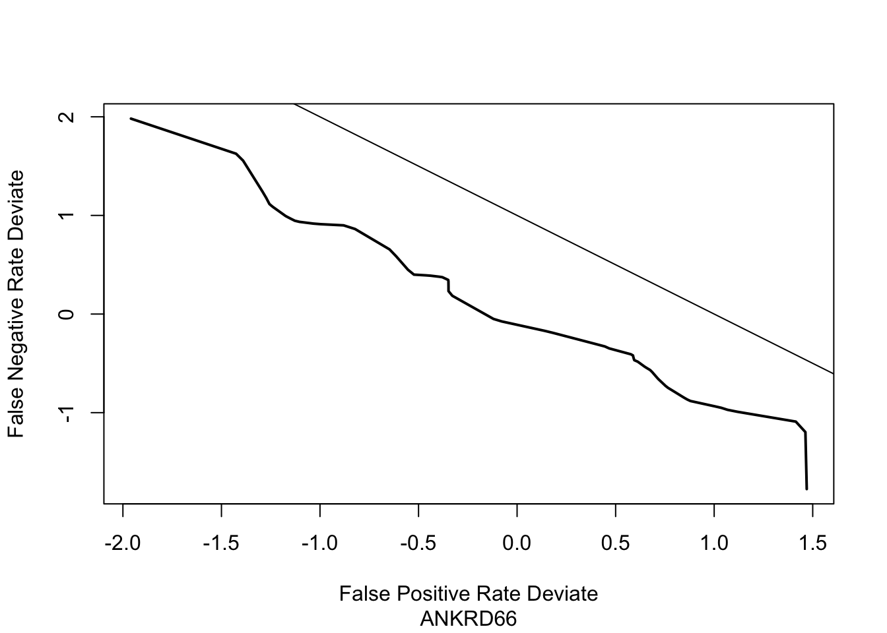
IGHA1 is another gene that behaves differently in the optimal vs. suboptimal group. The pattern is a change in both location and scale. The shift is large but there is no “clean” region where only one group is present. Also the directionality is reversed compared to ZNF487 so to make things comparable we will change the sign.
GeneName = "ZNF585B"
XX_ZNF585B = exprs(GSE32063_eset)[GeneName,]
YY = pData(GSE32063_eset)[,"debulking"] == "optimal"
plot(XX_ZNF585B,YY,xlab=c("Log Expression of",GeneName),
ylab="Debulking Status",cex=2)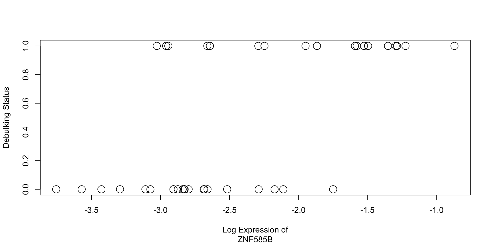
ffx = density(XX[YY==FALSE],from=-4,to=0)$x
ff0 = density(XX[YY==FALSE],from=-4,to=0)$y
ff1 = density(XX[YY==TRUE],from=-4,to=0)$y
prev = .2
ppv_ZNF487 = prev * ff1 / ( prev * ff1 + (1-prev) * ff0)
plot(ffx,ppv_ZNF487,ylim=c(0,1),col="blue",
xlab=c("Log Expression",GeneName),
ylab="Probability of optimal debulking",type = "l",lwd=2)
ffx = density(XX_ZNF585B[YY==FALSE],from=-4,to=0)$x
ff0 = density(XX_ZNF585B[YY==FALSE],from=-4,to=0)$y
ff1 = density(XX_ZNF585B[YY==TRUE],from=-4,to=0)$y
ppv_ZNF585B = prev * ff1 / ( prev * ff1 + (1-prev) * ff0)
lines(ffx,ppv_ZNF585B,col="orange",lwd=2)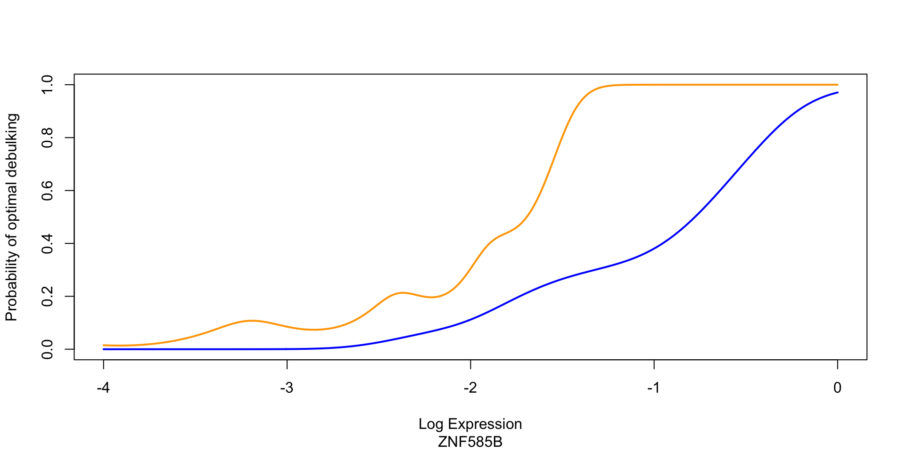
Open for comments.
Setting levels: control = FALSE, case = TRUESetting direction: controls < casesSetting levels: control = FALSE, case = TRUE
Setting direction: controls < cases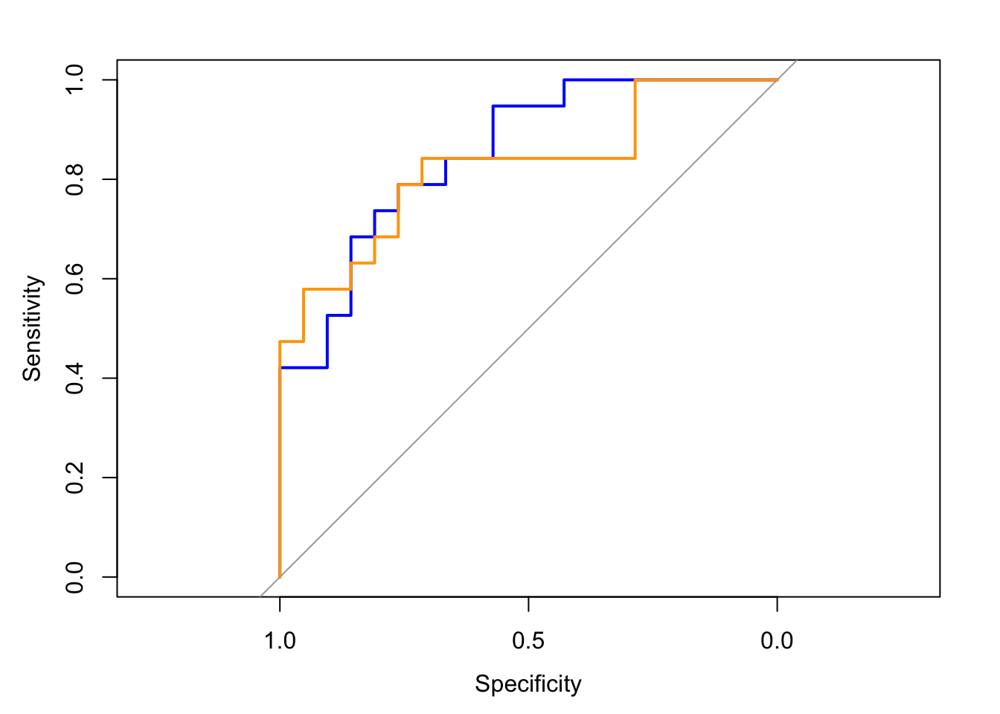
Open for comments.
plot(precision ~ recall,
coords(roc(YY,XX), "all", ret = c("recall", "precision"), transpose = FALSE),
type="l",col="blue")Setting levels: control = FALSE, case = TRUESetting direction: controls < casesSetting levels: control = FALSE, case = TRUESetting direction: controls < caseslines(precision ~ recall,
coords(roc(YY,XX_ZNF585B), "all", ret = c("recall", "precision"), transpose = FALSE),
type="l",col="orange")Setting levels: control = FALSE, case = TRUE
Setting direction: controls < casesSetting levels: control = FALSE, case = TRUESetting direction: controls < cases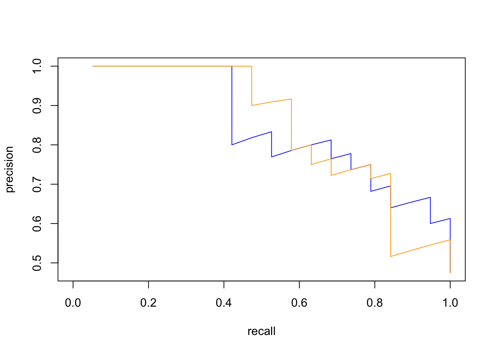
Open for comments.
DET_ZNF585B = DET(XX_ZNF585B,YY)
plot(DET_ZNF487$zz0,DET_ZNF487$zz1,
xlab=c("False Positive Rate Deviate",GeneName),
ylab="False Negative Rate Deviate", type = "l",lwd=2,col="blue")
lines(DET_ZNF585B$zz0,DET_ZNF585B$zz1,col="orange",lwd=2)
abline(1,-1)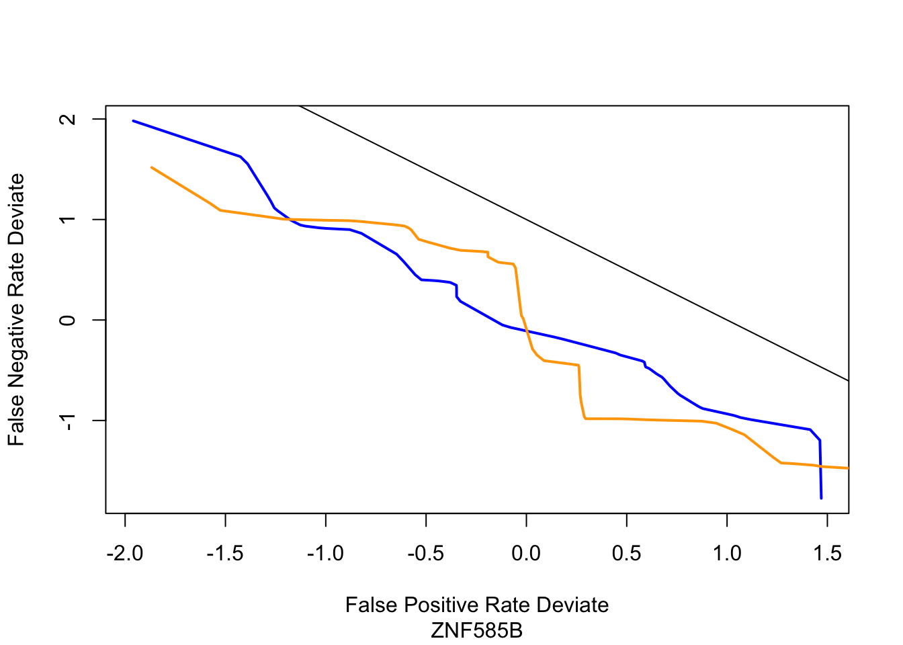
[https://doi.org/10.1111/j.1541-0420.2007.00781_1.x]